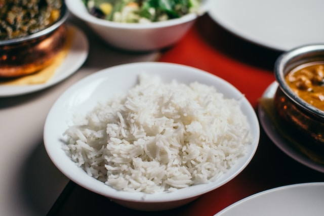

Simple Rice Recipe
Description
Looking for a simple rice recipe? This recipe is very simple and can save you from hunger and
the shame of not knowing how to prepare simple rice. From this recipe, the sky is the limit.
Ingredients
- Rice
- Water
- Salt
- Olive oil or soybean oil
- Garlic (Optional)
Steps
- Place the desired amount of rice in a bowl. Take it to your kitchen tap and add water to the rice.
With your (clean) hand, squeeze the rice almost as if you wanted to crush it
(But not too hard, you monster). Do this handful by handful until you think you have done this with all
the rice in the bowl.
- (Optional) In another bowl, peel the garlic and chop or grind it. I recommend using one clove of garlic for
every cup of rice you use. Did you forget to measure? Well, measure it by eye, it will work!
Now your garlic is ready to go into the pan you planned to prepare the rice.
With a low heat on the stove, you need to fry the garlic with a spoonful of olive oil or
cooking oil until you notice a yellowish or golden color on the garlic.
- Pour the washed rice after drying into the pan next to the garlic and stir well.
Then add water until you see it is about an inch above the rice. Bring to a boil and wait for
the water to dry. Stir from time to time and when you feel that it has a consistency that
you like, it is ready.
- Add the amount of salt you prefer. I recommend half a spoon for every two cups.
Your rice is ready!
Home